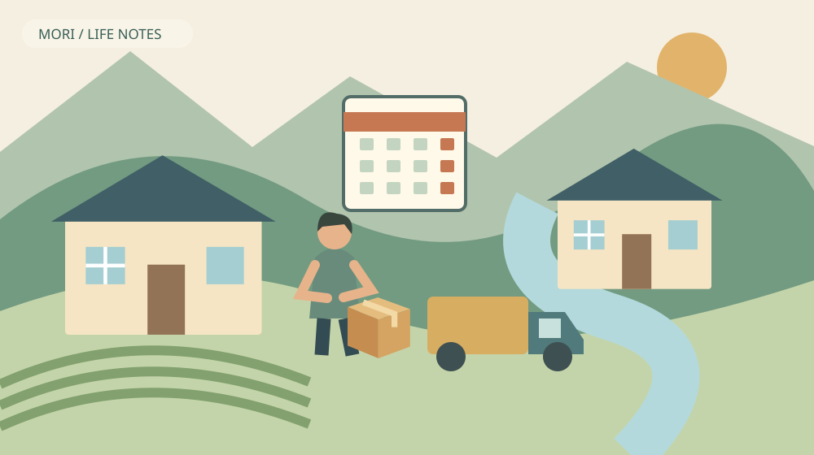
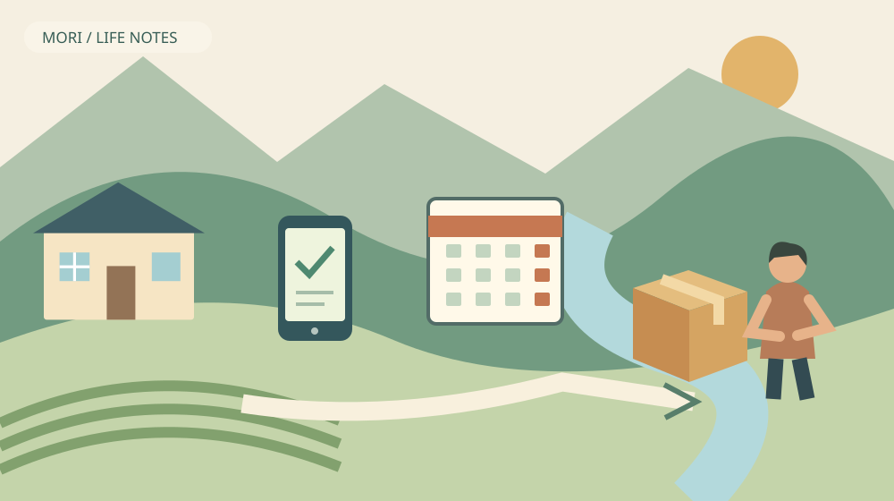

森町の二拠点生活｜宅配を留守宅に残さない準備
Q. 森町と別の家を行き来するとき、宅配を受け取り損ねない方法は？
A. 注文前に配送先住所と滞在日を合わせ、荷物ごとの受取通知と変更可否を確認します。ヤマト運輸の不在時保管は常温7日、クールは原則3日で延長できません。留守の家への置き配を前提にせず、日時や受取場所を選べるかを事業者ごとに確かめてください。
二つの家の間で、荷物の行き先を置き去りにしない
森町へ物を届ける人には、住所を確認し、荷物を運び、受け渡す仕事があります。家族が受け取れなければ、その荷物を保管して再び届ける段取りが加わります。二拠点生活を便利にする通販も、配達する人の手間の上に成り立っています。使う側で減らせる行き違いから考えたいと思います。
大石浩之（磐田市／不動産業）です。私は森町の外に暮らし、不動産の仕事から家の使われ方を見ています。週末だけ使う家でも、荷物は平日に届くことがあります。家を持つことと、その住所で毎日受け取れることは同じではありません。今回は二拠点生活の宅配に話を絞ります。
2026年11月1日に確認した国土交通省の資料では、2026年4月の多様な受取方法の利用率は31.0％でした。調査結果の公表日は同年7月10日です。受け取り方の選択肢が使われていることを示す数字ですが、森町の留守宅へ何でも置けるという意味ではありません。
今日できるのは、次に注文する商品の配送先と、家族がその家へ行く日を見比べることです。通販サイトに住所が登録されていても、現在の滞在予定までは反映されません。家の管理を複雑な仕組みに変える前に、注文の入口で一つ確認を足す方法を考えます。
全国の受取方法調査を、森町の数字にしない
国土交通省が示す31.0％は、大手宅配事業者3社を基にした2026年4月の数値です。同じ発表にある再配達率7.6％は、大手6社ベースです。対象事業者の範囲が違うため、二つの数字をそのまま足したり、残りを対面配達と計算したりすることはできません。
私はこの調査を、家族の受け取り方を見直す入口として読みます。全国の率を森町の特定地区に当てはめるつもりはありません。道路の状況や配達経路、事業者ごとのサービス条件を、この数字だけから知ることもできません。家ごとの手順は、配送を担当する事業者の案内で確認します。
非対面の受け取りが選べることと、数日間放置してよいことも違います。滞在先を切り替える家族は、届いた物をいつ確認するかまで決める必要があります。通知が来た時点で受取作業が終わったと考えず、実物を誰が確認するかを残しておきたいと思います。
二拠点生活に使う家が森町にあるとしても、すべての注文をその住所に集める必要はありません。日常的にいる方の家で受け取り、必要な物だけ持参する方が合う場合もあります。私は荷物の種類、移動の負担、受け取れる日を並べて選ぶ方法を提案します。どちらの家が正解かを一律には決めません。

注文前に、住所・日付・荷物の種類を一組にする
二拠点生活の宅配準備では、配送先住所、到着予定、荷物の種類を一緒に確認します。常温品か冷蔵・冷凍品か、大きな荷物かによって、受取方法が同じとは限りません。通販画面に示される選択肢を見て、指定できる日時や場所を確認してから注文します。
私なら、注文先住所の名前を「森町の家」「普段の家」と区別して管理します。ただし通販サービスごとの機能によるため、必ず名前を付けられるとは限りません。表示された郵便番号と番地を読んで確かめることが基本です。以前の注文先が残っている場合も、今回の予定に合うか見直します。
家族が別々に注文すると、同じ日に別の住所へ物が届くことがあります。私は全員の購入履歴を共有する必要はないと考えます。ただ、誰かに受け取りを頼む荷物については、到着予定と温度帯、受取方法を伝える。頼まれた人が準備できる範囲の情報に絞る方が実用的です。
到着予定日は、家族の滞在予定そのものを保証する日ではありません。配達の変更や遅れを確認できるよう、注文後の通知を見る人を決めます。家を出る予定が変わったときは、旅行の予定表だけでなく、まだ届いていない荷物の予定も見直す。この二つを一緒に扱います。
ヤマト運輸の保管期限は、常温とクールで違う
ヤマト運輸の公式FAQでは、常温の荷物は最初に不在連絡票を届けた日を含め7日間、クール宅急便は同じ日を含め原則3日間保管すると案内しています。クールは一部の品物で3日より短い場合があります。いずれも保管期限を延長できないと明記されています。
意外なのは、常温の7日間が「次の週末まで必ず待ってもらえる」日数ではないことです。不在票を届けた日を含めて数えます。家族が不在票に気付いた日から7日ではありません。週に一度しか行かない家では、現地で紙を見るまで待つこと自体が、受け取りを難しくする場合があります。
保管期間を過ぎた場合は、発送元へ確認のうえ返送するという案内です。返送後の対応は発送元への問い合わせになります。私は、期限が近くなってから誰かを急いで家へ向かわせる段取りを基本にしたくありません。注文前と通知時の確認で避けられる行き違いを、先に減らしたいと思います。
送り状にある住所で受け取りが難しい場合、同社は営業所受け取りや転送を案内しています。ただし別住所への転送や受取場所の変更には、個別の条件があり得ます。この記事では無料で自由に変更できると断定しません。対象荷物の画面や公式案内で条件を確認してください。
ここで示した保管日数はヤマト運輸の案内です。他社の配送、通販事業者独自の配送、別のサービスへそのまま当てはめません。配送を担当する事業者とサービス名を確認することが先です。同じ通販サイトで買っても、すべての荷物が同じ条件で届くとは考えないでください。
曜日別の受取設定は、滞在の型がある人に検討余地
ヤマト運輸のMyカレンダーサービスは、曜日ごとに受け取りやすい時間帯や場所をあらかじめ指定する仕組みです。利用にはクロネコメンバーズへの登録に加え、本人認証と荷物の通知設定が必要です。登録しただけで全設定が終わるわけではない点を確認します。
公式案内では、設定は登録日の翌日に発送される荷物から反映されます。設定した瞬間に、すでに配達中の荷物まで一斉に変わると思い込まないでください。お届け予定通知や配達変更依頼受付の通知を見て、その荷物に設定が反映されたかを確かめる必要があります。
私は、毎週同じ曜日に森町へ行く家族には、設定を検討する意味があると思います。一方、仕事や家族の都合で滞在日が変わる方は、曜日の設定が現実とずれる場合があります。便利な自動設定も予定変更の確認は残ります。設定をしたから通知を読まなくてよい、とは考えません。
受取方法には対象外となる荷物や条件があるため、画面で選べる内容と注意事項を確認します。置き配、宅配ボックス、店舗といった名称を知ることと、自分の荷物で使えることは別です。家の近くに場所が見えるというだけで、受取先に指定できるとは限りません。
通知のリンクを利用する場合は、事業者の正規サイトや公式アプリから確認する習慣も持ちたいと思います。急いで受け取りを変更する場面ほど、送り主や画面を十分に見ず操作しがちになるからです。不審な案内に個人情報を入力せず、正規の入口から荷物の状況を調べる方法を選びます。
良い点｜留守の時間を、注文時の判断に使える
受取方法を事前に確認する良い点は、不在になってから対処するだけでなく、注文時に受け取れる条件を選べることです。滞在日と荷物の種類を合わせれば、家族が現地へ戻るためだけに動く負担を減らす工夫ができます。配達する人へ同じ住所を再訪してもらう行き違いも避けたいところです。
私は、二拠点生活の自由さを「いつでも好きな場所へ移れること」だけで測らない方がよいと考えます。帰る前に残る仕事が少ないことも自由さの条件です。未着の荷物が分かり、受取担当が決まり、必要なら変更を確認できる。その準備が、家を空けるときの気掛かりを小さくします。
家族が手続きを一人で抱えず、通知を見る人と実物を受け取る人を分けられるのも利点です。ただしアカウントの共有を安易に勧めるものではありません。本人が正規の手段で変更し、必要な予定だけ家族に伝える。利用規約や本人確認に従うことを前提に、家族の分担を考えます。
二拠点生活そのものの選び方は、森町の二地域居住の記事で扱っています。今回の宅配は、その暮らしを実際に回す一つの作業です。移住を決断してから初めて考えるのではなく、短い滞在を試す段階でも、受け取りの予定を組んで確認できます。
注文したい点｜置き配だけで解決したことにしない
留守宅への置き配は、配達が完了しても家族による荷物の確認が残ります。受取場所や対象品の条件は事業者の案内に従います。屋外へ置ける空間があることと、そこを受取先として使えることは別です。利用できる条件を確認せず、敷地が広いから便利だと決めないでください。
私は、二拠点世帯の案内には、配達完了後に誰が回収するかまで含めたいと考えます。次に来る日が未定なのに、留守宅の玄関へ置く設定だけ済ませるのは、管理を先送りすることになります。持ち物を増やす前に、受け取った物を家の中へ収める担当と時期を決める方が現実的です。
近所の方へ荷物を預かってもらうことを、地域の親切として当然視するつもりもありません。先方の時間や保管場所を使うためです。頼む場合には相手の合意と配送上の条件を確認する必要があります。地域の負担を増やす方法より、まず自分の注文先と受取設定を見直したいと思います。
どこまで自動設定を使うのがよいかは、私にも迷いがあります。毎回の操作を減らせる一方、滞在日が変わったときに設定を忘れる可能性があるからです。私は、予定が一定なら活用を検討し、不規則なら荷物ごとに通知を見る方法を残す考えです。便利さを使いつつ、確認する人をなくさないことです。
森町の家探しと、荷物を受け取る条件をつなぐ
森町の「移住定住手続き」は、生活の目的や優先順位を家族で考え、何度か足を運んで地域を確かめる流れを示しています。家の外観や部屋数だけでなく、生活の作業を試すという考え方です。私は宅配の受け取りも、その家で暮らす条件を具体化する小さな確認だと考えます。
物件を訪ねる際、私は玄関や収納を荷物の動きから見る方法を提案します。大きな箱をどこで開けるか、雨の日に持ち込む場所があるか、空き箱をどこで保管するか。特定の宅配ボックスを設置できると断定せず、借家なら貸主との確認事項として残してください。
森町空き家・空き地バンクの公式案内では、町は情報提供を行い、物件の仲介や契約、管理は行わないと説明されています。登録物件だから留守中の荷物も町が見てくれる、という仕組みではありません。家を利用する側が、管理の範囲と連絡先を整理する必要があります。
私は、鍵を預ける管理契約がある場合でも、宅配の受け取りが含まれるかを別に確認した方がよいと考えます。契約にない役目を後から頼むと、対応の可否も費用も曖昧になります。家の管理、清掃、荷物の受領は同じ仕事とは限りません。頼む内容を言葉にして合わせることが先です。

対案・結論｜注文から回収までを一枚にする
二拠点生活の宅配で今日できる一歩は、未着の注文を確認し、配送先と次の滞在日を照合することです。荷物ごとに温度帯、到着予定、受取方法、通知を見る人、実物を確認する人を並べます。宅配事業者の画面で変更できる内容を見て、必要な操作だけを行います。
私は、受取予定表に「発送前」「発送済み」「変更受付」「受領済み」を分けて残す方法を提案します。受付通知が来ただけで、実物を受け取ったと勘違いしないためです。細かい管理が負担なら、未受領の荷物だけを短いメモにする形でも構いません。家族が続けられる方を選びます。
冷蔵・冷凍品は、届いた後に使い切れるかまで考える必要があります。買い置きと滞在日数の関係は、森町の二拠点と食品管理の記事へつなげます。保管期限だけ守れば食材の管理が終わるわけではありません。受取後の冷蔵庫や食事の予定は別に確認します。
仕事で滞在日が変わる家庭は、二拠点勤務の記事と合わせ、出社予定と受取日を照合できます。仕事の通知と宅配の通知を同じ人が見ているとは限りません。予定変更があったときに誰へ伝えるかを決めておけば、家族の連絡を短くできます。
家族に残す記録｜個人情報は必要な範囲に絞る
宅配の記録は、注文先の住所と受取状況を確認できれば十分な場合があります。家族の共有メモへアカウントのパスワードや本人確認資料を貼る必要はありません。追跡番号なども必要な相手だけへ伝え、使い終えた記録の扱いを決めます。便利さのために情報を広げすぎない方がよいと思います。
写真で受取場所を共有する場合も、表札や家の中、鍵の置き場所まで写す必要はありません。事業者が求める正規の設定方法に従い、家族間では必要な範囲に限定します。荷物を置く位置を相談することと、不在の予定を不特定の人へ公開することを混ぜないでください。
二つの家で同じ品物を買い足す前に、どちらに何があるかも記録しておくと注文先を選びやすくなります。私は、在庫を完璧に管理する必要はないと考えます。頻繁に買う消耗品だけでも、置き場所が分かれば重複を避ける判断ができます。宅配の準備を家計の整理にもつなげられます。
受け取りを一度失敗しても、二拠点生活全体が向いていないと結論づける必要はありません。住所を間違えたのか、通知を見なかったのか、予定が変わったのか。原因を一つ分けて直す方が、次の注文に役立ちます。家族や配達員の誰かを責める前に、手順の抜けを見たいと思います。
大石の視点｜家の管理は、留守の日にも続く
私はこう考えます。二拠点生活の家は、滞在している日だけ存在するわけではありません。留守の日にも配達や連絡が来るからこそ、家族が不在を前提に段取りを組む必要があります。配達する人や近所の方の善意で穴を埋める前に、自分の注文先と通知を確かめる。その一歩なら、大きな設備を買わずに始められます。森町で暮らす時間を楽しむためにも、家を空ける時間の仕事を見える形にしたいと私は考えます。
住まいの条件として、玄関の広さや車を止める場所だけを見ても、宅配の問題は解けません。誰がいつ家にいるのか、荷物をどこへ動かすのかという時間の条件が加わります。私は、不動産の選択を物件の設備だけで終わらせず、家族の運用と組み合わせて考えることを勧めます。
結論は、置き配を増やすことでも通販を控えることでもありません。受け取れる場所へ注文し、変更を確認し、実物を引き取る担当を残すことです。今日の注文一つでその流れを確かめれば、次の滞在の準備になります。留守宅を、行き先の決まらない荷物の置き場にはしないと決めておきたいと思います。
FAQ｜二拠点生活の宅配で迷うこと
二拠点生活の宅配は、配送事業者と荷物ごとの条件を確認し、留守になる日から受取方法を考えます。
次の週末まで、営業所で待ってもらえますか？
ヤマト運輸は常温品を最初の不在票の日を含め7日間、クール宅急便を原則3日間保管し、延長不可と案内しています。クールは品物によりさらに短い場合があります。気付いた日から数えるのではありません。次の滞在日に間に合うかを確認し、受取が難しい場合は期限前に公式の変更方法を調べてください。
曜日別の設定をすれば、確認は不要ですか？
不要にはなりません。ヤマト運輸のMyカレンダーサービスには本人認証や通知設定が必要で、反映時期や対象荷物の条件があります。予定が変われば受取設定も見直します。配達変更依頼受付の通知と実際の受領は別なので、荷物ごとの通知を確認してください。すべての事業者へ共通する設定でもありません。
空き家バンクの家なら、町に荷物を頼めますか？
森町空き家・空き地バンクは情報提供の仕組みで、町は物件管理を行わないと案内しています。宅配の受取を町が代行する制度ではありません。管理業者へ依頼する場合も、荷物の受領が契約に含まれるかを確認します。まず配送先と滞在日を合わせ、事業者の受取変更の条件を確かめるところから準備してください。
出典・確認日
2026年11月確認。制度・施設・統計の説明は一次情報、評価と段取りの提案は大石浩之の意見です。
- 国土交通省：2026年4月の宅配受取方法調査（2026年11月1日確認）
- ヤマト運輸：長期不在時の保管期限（2026年11月1日確認）
- ヤマト運輸：Myカレンダーサービス（2026年11月1日確認）
- 森町：移住定住手続き（2026年11月1日確認）
- 森町：空き家・空き地バンク（2026年11月1日確認）
制度、数値、利用条件、日程は変更される場合があります。実際の利用前に担当窓口や事業者の最新案内を確認してください。個別の判断は関係する専門家へご相談ください。